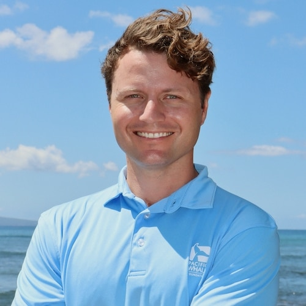

Chief Scientist · Pacific Whale Foundation
Marine mammal scientist working on cetacean ecology, bioenergetics, and conservation with a focus on translating research into protection for whales and dolphins across the Pacific Ocean.
Research program Get in touch
Background
I am Chief Scientist at Pacific Whale Foundation, where I direct research programs across Hawaiʻi, Australia, Ecuador, and Chile. I am also a PhD candidate at the University of Hawaiʻi at Mānoa, where my dissertation examines the energetics, ecology, and conservation of the endangered Main Hawaiian Islands insular false killer whale population.
My research broadly investigates the ecological and physiological responses of whales and dolphins to environmental and anthropogenic stressors — with the overarching aim of translating science into management action. I integrate drone photogrammetry, CATS biologging tags, bioenergetic modelling, and long-term photo-identification to understand how cetacean populations are faring and why.
I grew up on the East Coast of Canada and earned my B.Sc. and M.Sc. in Biology from Memorial University of Newfoundland before moving to Hawaiʻi in 2013. I have authored more than 35 peer-reviewed publications and contributed to two books.
Science program
PhD research investigating energetic expenditure, nutritional stress, and prey requirements of the endangered Main Hawaiian Islands insular false killer whale — combining CATS tags, drone photogrammetry, and bioenergetic modelling to inform recovery planning.
Long-term population dynamics, body condition, mother–calf energetics, vessel disturbance, and migratory connectivity of North Pacific humpback whales across Hawaiian and Australian waters.
Abundance estimation, social structure, habitat use, and fisheries interactions of spinner, pantropical spotted, and common bottlenose dolphins in Maui Nui, Hawaiʻi.
Developing science-based frameworks that translate cetacean research into management advice for NOAA, the U.S. Marine Mammal Commission, the National Marine Sanctuary, and the IWC Scientific Committee.
UAS-based morphometrics for body condition assessment across multiple cetacean species, including validation studies of commercial UAV platforms for field use.
Quantifying marine debris distribution, composition, and risk to cetaceans in Maui County waters; policy evaluation for litter reduction strategies.
Recent work
Five most recent lead-author publications. For a complete list, see Google Scholar.
Validation of the DJI Mavic 3 Pro for field-based whale photogrammetry
Currie, J.J., Stirling, B., and Barber-Meyer, S. — Aquatic Mammals, 52(2): 175–182
doi.org/10.1578/AM.52.2.2026.175 ↗The impact of the anthropause caused by the COVID-19 pandemic on beach debris accumulation in Maui, Hawaiʻi
Currie, J.J., Sullivan, F.A., Beato, E., Machernis, A.F., Olson, G.L., Stack, S.H. — Scientific Reports, 13(17729)
doi.org/10.1038/s41598-023-44944-4 ↗Rapid weight loss in free-ranging pygmy killer whales (Feresa attenuata) and the implications for anthropogenic disturbance of odontocetes
Currie, J.J., van Aswegen, M., Stack, S.H., West, K.L., Vivier, F. and Bejder, L. — Scientific Reports, 11: 8181
doi.org/10.1038/s41598-021-87514-2 ↗The impact of vessels on humpback whale behavior: the benefit of added whale watching guidelines
Currie, J.J., McCordic, J.A., Olson, G.L., Machernis, A.F. and Stack, S.H. — Frontiers in Marine Science, 8: 601433
doi.org/10.3389/fmars.2021.601433 ↗Getting butts off the beach: Policy alone is not effective at reducing cigarette filter litter on beaches in Maui, Hawaiʻi
Currie, J.J. and Stack, S.H. — Marine Pollution Bulletin, 173: 112937
doi.org/10.1016/j.marpolbul.2021.112937 ↗Roles & memberships
Get in touch
I welcome collaboration inquiries, media requests, and outreach from managers, policymakers, and fellow researchers. The best way to reach me is by email through Pacific Whale Foundation or the University of Hawaiʻi.